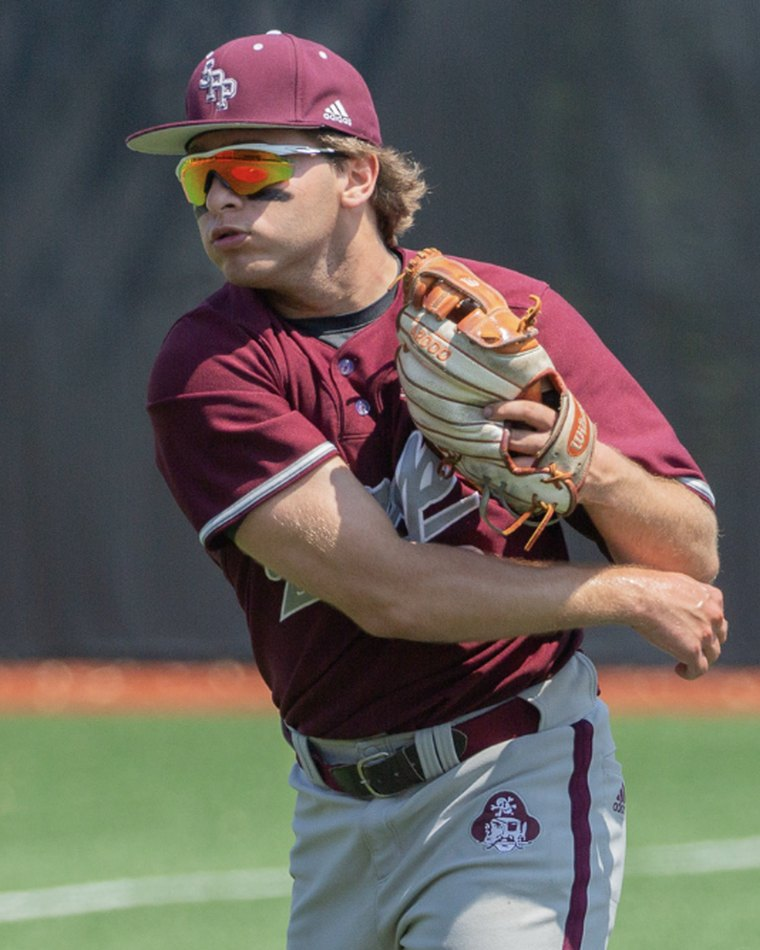

Ulisses Ferraz
Garwood, NJ
A highly decorated infielder with elite accomplishments at every level, Ulisses Ferraz is a St. Peter’s Prep graduate and standout shortstop who earned 3× All-County and All-State honors during a dominant high school career. A 4-year varsity starter and team captain, he was the heart of both the lineup and the infield—known for his leadership, glove work, and clutch play on both sides of the ball.
Ferraz continued his success at County College of Morris, where he became the Student-Athlete of the Year (2024) and served as the everyday shortstop. His performance earned him a spot at Rutgers–Newark, where he transitioned seamlessly to third base and continued to lead with professionalism and poise.
Known for his high baseball IQ, reliable glove, and disciplined bat, Ferraz now brings his energy and next-level baseball knowledge to coaching. He is dedicated to developing the next generation of players with the same intensity and passion that defined his own career.